01 / NO DATABASE
不引数据库
会话就是引擎自己写的 JSONL / thread。网页只读它、改名字、必要时删它，从不复制一份到自己的库里。
给已经在用的 coding agent 配一个网页：看它怎么想、中途插一句纠正、改完直接看 diff。会话还是引擎自己写在磁盘上的文件，不建库、不注册。
npm -g install pop-agent
然后在你的项目目录里跑 pop，它会自己开浏览器，只听 127.0.0.1:9090。
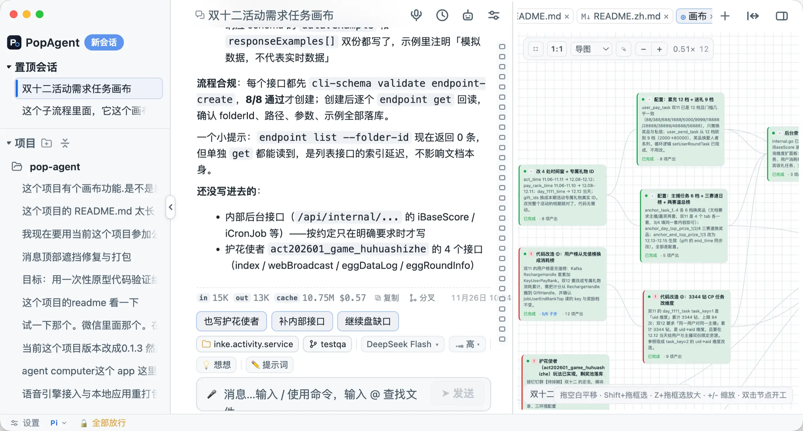
一次真实会话：对话与工具在中间，任务画布在右边，跑完的步骤在图上直接变「已完成」。
它不重写 prompt、不接管工具实现 —— 你装的是 pi、Codex、Claude Code、opencode，工作台只给它们配一套能看的界面、能点的按钮和能落盘的会话列表。三条硬纪律决定了它长什么样。
会话就是引擎自己写的 JSONL / thread。网页只读它、改名字、必要时删它，从不复制一份到自己的库里。
引擎没有的能力就在界面上藏起来（能力矩阵）；面板拿不到数据就直说，不拿别的引擎的配置冒充。
默认只听 127.0.0.1。要远程就显式 -H 0.0.0.0，并且先在本机把密码设好。
输入框上方那一排：把「怎么开口」做成能点的东西。
点一下，它跑一个隐藏回合读当前上下文，回 1–5 条「你接下来可以这么说」（默认 5 条，手机 3 条）。点一条就发；那一轮不进会话历史，也不花你一条消息。
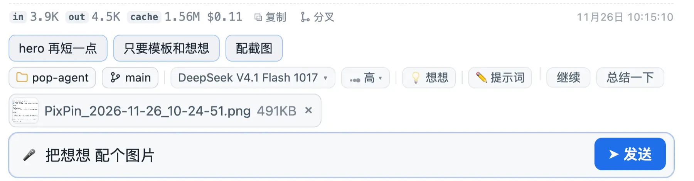
思考块、工具调用、改动文件、token 与花费都在对话流里；回合没跑完也能插话、排队、停下。
工具卡给参数、完整命令、输出、耗时与成败；跑完自动收成一行「N 段思考 · N 次工具 · 耗时」，点开就是完整时间线。
src/App.tsx 直接开预览。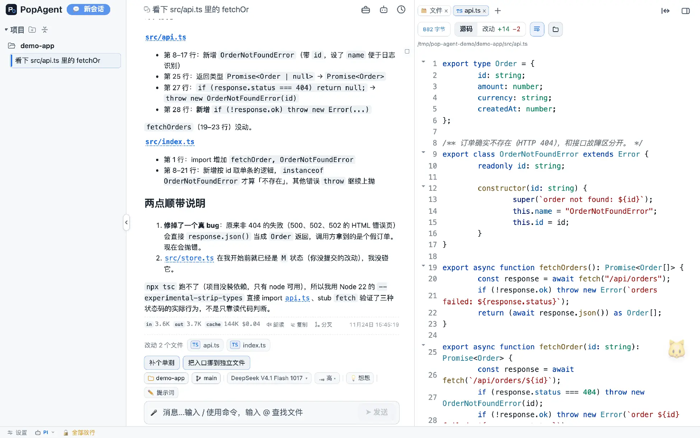
回合跑着的时候输入框不会锁死：插队立刻生效，排队等本回合结束，停止保留已经产出的内容。
选中一段回复，浮出小工具条：加进会话、写一条标注、或丢到临时会话里单独问。正文上会留 ①②③ 编号，输入框里多出一颗「N 条注释」。

语音、定时、电脑控制、画布、推送、远程 —— 都在同一个进程里，不是拼起来的几个工具：它们共享同一套会话、同一个工作区、同一套审批。
不是"说完才出一坨字"：麦克风气泡一开，文字边说边进输入框。轻按一直听着，长按按住说话、松手就发。它答完会自动朗读，语速音色可调，能暂停 / 继续 / 停止。
SFSpeechRecognizer），朗读用系统语音 —— 不出机器、不花钱。edge（微软）或自建 kokoro / qwen3。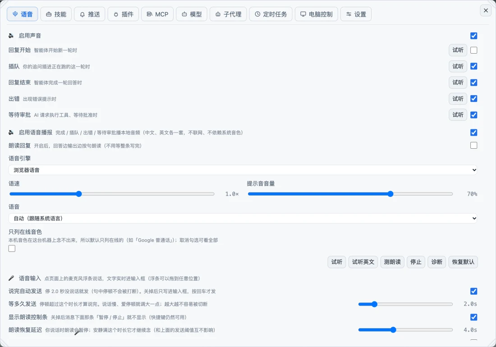
一个任务 = 提示词 + cron + 时区。文本任务直连模型不碰仓库；Agent 任务在工作区真跑一个回合。在对话里说一句「每天早上 9 点看一下这个仓库」，agent 自己就建好了。
无人值守就按无人值守算：默认拒绝写操作，除非显式勾「允许改动文件」；超时中断记成失败，绝不把半截输出当成功。
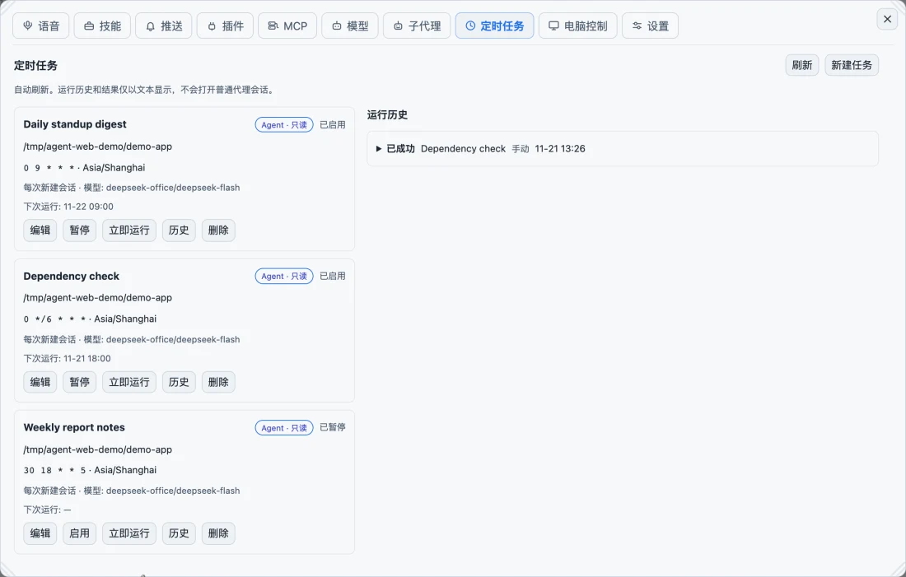
不是截图猜坐标：它读 macOS 辅助功能（AX）元素树，按编号点击。能点、能输入、能粘贴（用完恢复原剪贴板）、能发快捷键、能按菜单路径执行。
密码框一律不替你填；系统认证与被保护的 App 默认不许动。总开关就是那个技能，所以任何有 bash 的引擎都能用。
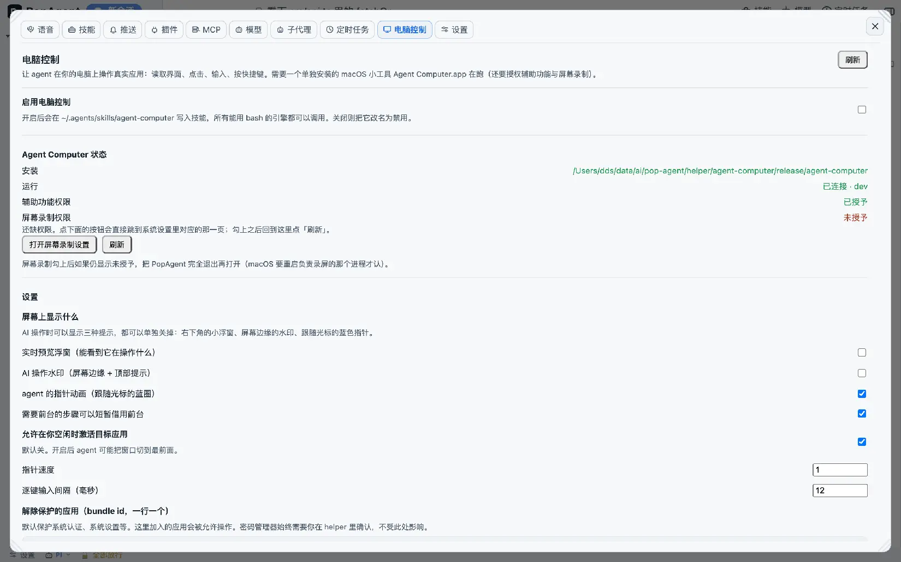
你说一件要多步才能完成的事，agent 把它拆成节点 + 依赖边画到右边。节点有类型 —— 任务 / 里程碑 / 风险 / 决策 / 资料 —— 一眼看出哪一步容易翻车、哪一步要你拍板。
能点：开始干标「进行中」，干完标「完成」，进度直接画在图上。一步里还有小事就钻子计划，主图只留汇总。

回合结束推一条：标题是项目、正文是会话，失败加 ❌、中断加 ⏹。Web Push（VAPID），不依赖任何第三方服务，密钥首次启动自己生成。多设备、测试推送、一键清空。
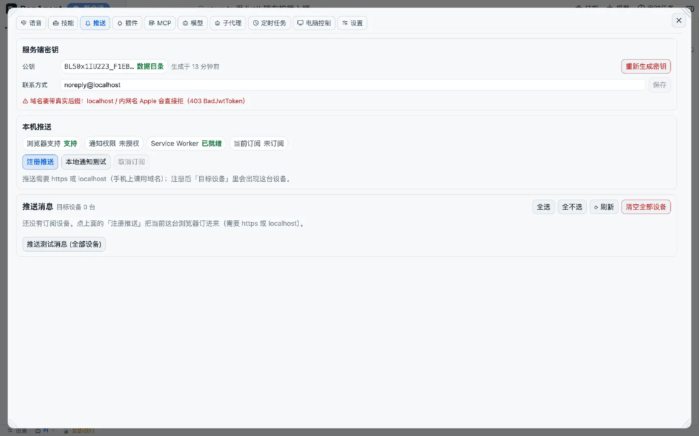
pop -H 0.0.0.0 就能从手机 / 别的电脑打开。密码必须先在本机设（远程不许设，否则谁先扫到端口谁接管）；连续输错 3 次暂停 30 分钟，锁定期内连密码都不比对。
手机上就是真的手机布局：侧栏变抽屉、顶栏只留图标、输入框 18px 防自动放大、右栏变整屏第二页。
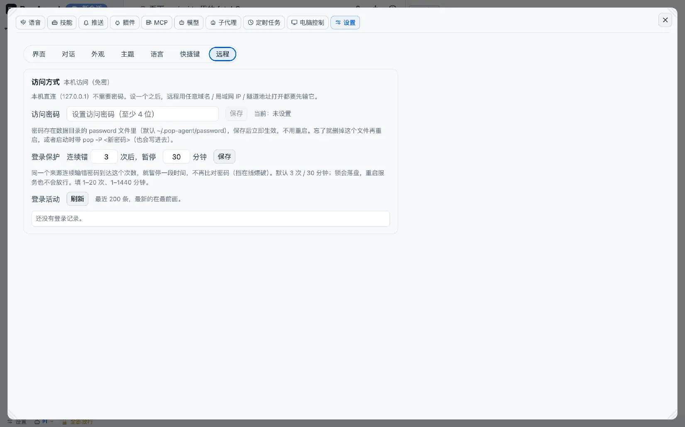
右栏是一个多标签工作区：文件预览、改动对比、真终端、内置网页、临时会话。前三个用来复核，网页那个用来开发。
目录树、按文件名搜、全文检索（支持 web/src/** 这样的路径掩码）；预览支持 markdown、mermaid、图片、PDF、音视频。顶到「改动」就是与 HEAD 的对比：+10 −1 概览、行级红绿、可只看改动。
@src/store.ts:120-138
右栏的终端是真 PTY（node-pty + xterm.js）：vim、top、Ctrl-C、颜色、行编辑都正常，cwd 跟会话所在项目一致。刷新页面不会恢复终端会话，切标签则不会断。
在右栏打开本地页面（请求走本机代理，不带 cookie），点刷新旁边的 📍 进入拾取模式：点页面上要改的那一处，就地写一句意见，页面上留下 ①②③ 标记；一次能连着标好几处，整批进输入框的「N 条注释」。

切到 Codex，面板读的就是 Codex 自己的东西；没接的面板会直说，不拿 pi 的配置冒充。

订阅 OAuth 登录、内置填 key、自定义端点与 API 形态；逐个勾选白名单。key 不出服务端，只回尾 4 位。
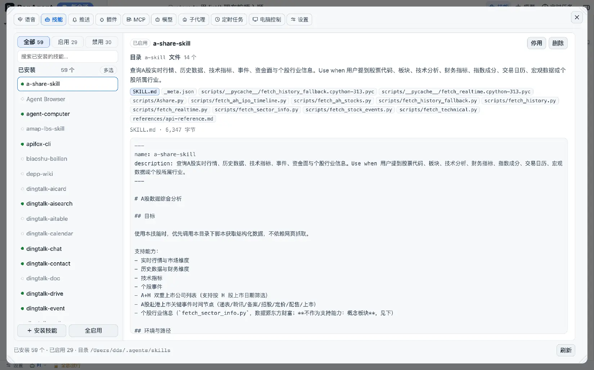
读 ~/.agents/skills；启停就是改文件名，没有第二份状态文件。Skill Hub 支持分类搜索与一键安装。
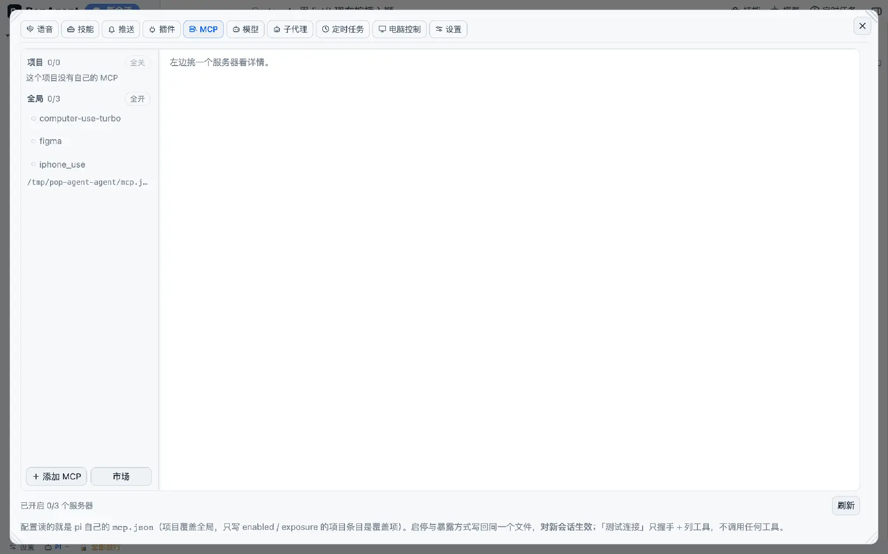
全局与项目两份配置、项目同名覆盖；exposure 四档；「测试连接」真握手后即断，报工具数。
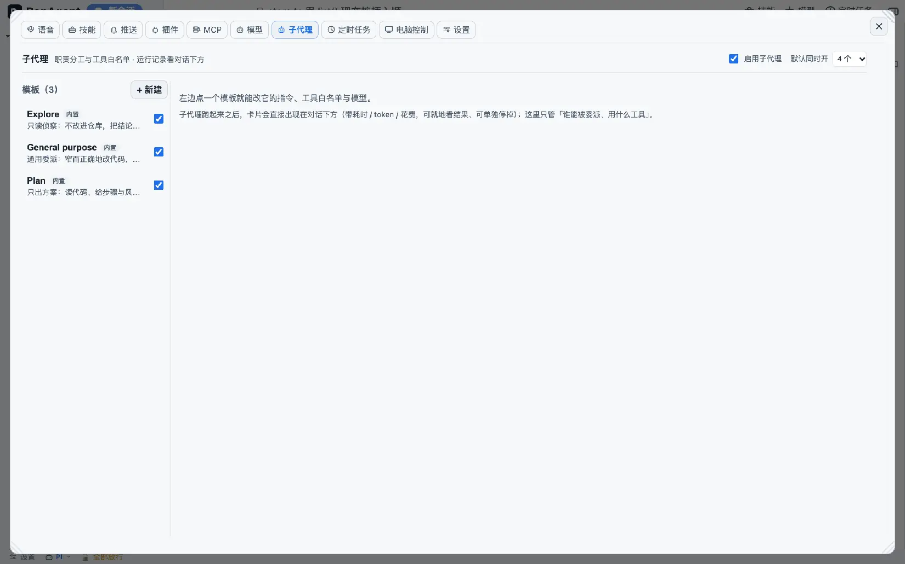
内置 explore / general-purpose / plan，可改可停；并发 1–12，超出的排队。每个子代理都是一个真实会话。
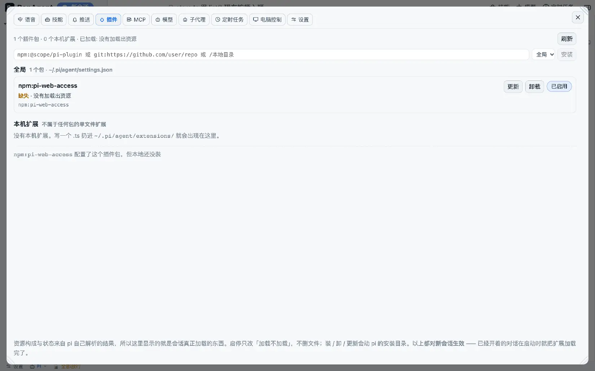
插件就是 pi package：npm / git / 本地目录，四态 loaded · installed · missing · disabled，按包停用不删文件。
回合结束推一条（失败 ❌ / 中断 ⏹ 带前缀），点通知直达会话；四类事件提示音 + 本地 TTS，不联网。
左栏是项目与会话，中间是对话，右栏是工作区，底栏是「这一句怎么跑」。所有入口都能在设置里逐项隐藏。

左栏项目与会话 · 中间对话 · 右栏源码 · 底栏状态
引擎不是「同一个 prompt 换个皮」：每个都接自己的官方循环，能力差异在界面上按矩阵隐藏按钮。
| 能力 | pi | codex | dsh | opencode | claude |
|---|---|---|---|---|---|
| 审批 | ✓ | ✓ | ✓ | 看配置 | ✓ |
| 模型 / 思考档 | ✓ | ✓ | ✓ | ✓ | 模型可切 / 无档位 |
| 恢复历史会话 | ✓ | ✓ | ✓ | ✓ | ✓ |
| 插队 | ✓ 原生 | ✓ 打断续发 | ✓ 打断续发 | ✓ 打断续发 | ✓ 打断续发 |
| 子代理面板 | ✓ | — | — | — | — |
| 工作台管 provider | ✓ | — | — | — | — |
| 临时会话（内存） | ✓ | — | — | — | — |
macOS（Apple Silicon）直接下 .dmg 拖进「应用程序」—— 不用装 Node、不用碰终端，运行时已经打进 App 里。其它平台走 npm，要求 Node ≥ 22.19。Linux 上内嵌终端需要就地编译 node-pty（make / g++ / python3）。
macOS 下载 .dmg 拖进「应用程序」即可；其它平台 npm -g install pop-agent，或一行脚本装到 ~/.pop-agent（不碰系统全局目录）。
进到你的项目目录敲 pop：前台运行并打开浏览器，默认只监听 127.0.0.1:9090。
点「新会话」发第一句。想从手机或别的电脑进，就 -H 0.0.0.0，并且先在本机「设置 → 远程」设好密码。
# 安装 npm -g install pop-agent # 在你的项目里启动（前台 + 打开浏览器） cd ~/code/my-proj pop # 后台跑、看状态、停掉 pop -d pop status pop stop # 换端口 / 指定工作区 pop -p 9191 POP_AGENT_CWD=~/code/my-proj pop
| pop | 前台启动 + 打开页面（Ctrl-C 退出） |
| pop -d | 后台运行，日志进 daemon.log |
| pop status | pid / 端口 / 引擎 / 会话数 / 工作区 |
| pop -H 0.0.0.0 | 允许远程访问（需先设密码） |
单用户工具的安全边界应该小到能讲清楚：谁能进、怎么进、失败会怎样。
对端是回环且 Host 是回环才放行；其它来源未设密码时全拒。
远程不能设第一个密码 —— 否则端口一暴露，谁先扫到谁接管。密码落在数据目录，改完立即生效。
次数与时长可改（1–20 次 / 1–1440 分钟），锁会落盘，重启不解锁；设置里还能看到登录活动。
只读工具自动放行，其余按「工具 + 目标」询问；「总是允许」写进 approval-rules.json。回合结束会清掉悬置审批。
iframe 沙箱不含 allow-same-origin，远端 JS 摸不到工作台的存储与接口。
-H 0.0.0.0 让外面连得上，密码负责拦住人。域名、局域网 IP、外网 IP 一视同仁，不需要额外白名单。
会话在引擎自己的目录（pi: ~/.pi/agent/sessions）；工作台只存 settings.json、锁、日志、推送订阅与本机界面偏好。换台设备打开，看到的是同一批会话文件。
不会。工作台读的是引擎自己的会话文件或 thread，只做展示、改名和删除；不建第二份库，也不改引擎的 prompt 与工具实现。
不会额外上传。只有你自己配置的模型 provider 会收到请求；工作台本身不经过任何中转服务。
因为它能直接跑命令、读写文件。默认只听 127.0.0.1，等于「能打开页面的人本来就已经能操作这台机器」。要远程必须显式开 -H 并设密码。
能。窄屏自动切成单栏、侧栏变抽屉、输入框 18px 防缩放。远程访问用 -H 0.0.0.0 + 密码；想收推送需要 https（添加到主屏的 PWA 也行）。
macOS、Linux、Windows 都支持。Linux 的内嵌终端需要就地编译 node-pty：装好 make / g++ / python3，或让一行脚本带 --with-build-tools。
临时会话是人开的另一条通道：不落盘、关掉就销毁，可以保存成正式对话。子代理是 agent 派出去的子任务：有自己的上下文与会话文件，跑完把结论带回来。
那是能力矩阵在起作用：当前引擎不支持的语义（比如非 pi 引擎的插队、子代理面板）就不显示按钮，而不是发一条注定失败的命令。